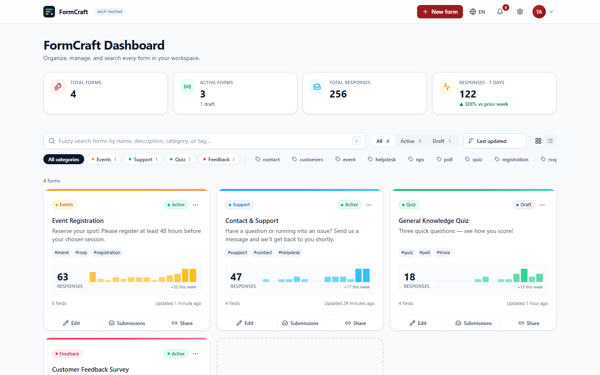
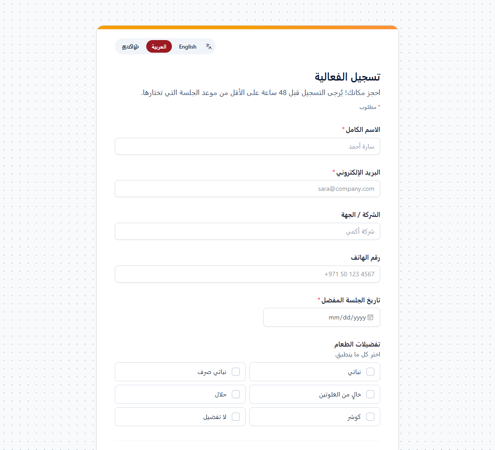

FormCraft is a self-hosted form builder. Build forms by drag-and-drop, share a link or a QR code, and read every response in a table with charts. It runs on your server, in English, Arabic and Tamil, light or dark.
curl -fsSL https://raw.githubusercontent.com/shatheitguy/formcraft/main/install.sh | bash
Every screen below is the real app, not a mock-up.
Built for teams who want Google-Forms simplicity without sending their data to someone else.
Text, choices, date, rating and scale, plus terms & conditions and file uploads. Start from 13 templates: job application, registration, orders, leave, IT tickets, surveys and more.
Mark the correct answers, give each one points, and show respondents their score when they submit.
A filterable table, per-question charts, NPS, and CSV, PDF and Excel reports — sent to WhatsApp in one tap. Choice answers are stored the same way in every language.
Admins, editors and viewers. Give each person all forms or only the ones they need, read-only or editable.
SMTP, your own Telegram bot, and WhatsApp linked by QR code. Alerts can carry the response as PDF or Excel, and reports go out on WhatsApp in one tap.
Every form gets a unique link and its own port, served without a restart. Point a Cloudflare Tunnel at it and add a QR code.
Workspace name, logo and accent colour, plus a logo, cover image and colour for each form. Your own footer text, too.
Hourly, daily or weekly backups of every form, response and uploaded file, with retention. Restore previews the file, takes a safety snapshot first, and also moves SQLite to PostgreSQL.
Hashed passwords, throttled logins, two-factor sign-in, secrets kept server-side, uploads checked by file signature. No telemetry, no cloud.
Every screen works on a phone, including the builder. The Android app connects to your server like Nextcloud: enter the address once, then everything is there.
Settings → About shows your version and checks for a new one. Native installs update in one click; Docker installs get the exact command.
The app is fully translated into English, Arabic and Tamil, and Arabic turns every screen right-to-left. Forms can be offered in several languages at once.

The installer asks. The tables build themselves on first start and update themselves on every upgrade.
A separate postgres:16 container with its own volume. The password is generated unless you type one. Adminer is optional.
Enter host, port, database, user and password. The installer tests the connection before it writes anything.
One container and one file on a volume. Nothing else to run, which suits personal use and small teams.
The installer checks Docker and asks three questions: database, ports and demo data. It writes .env, pulls the image and starts FormCraft. Open the address and create your admin account; there is no default password.
curl -fsSL https://raw.githubusercontent.com/shatheitguy/formcraft/main/install.sh | bash
irm https://raw.githubusercontent.com/shatheitguy/formcraft/main/install.ps1 | iex
docker compose pull && docker compose up -d
| Image tag | Use it for |
|---|---|
latest | Follows main. Works with SQLite and PostgreSQL. What the installer uses. |
1.0.0 | Pinning a known-good release in production. |
Unraid: the template is in shatheitguy/unraid-templates, with my other Unraid templates. It uses SQLite in /mnt/user/appdata/formcraft with PUID 99 and PGID 100.